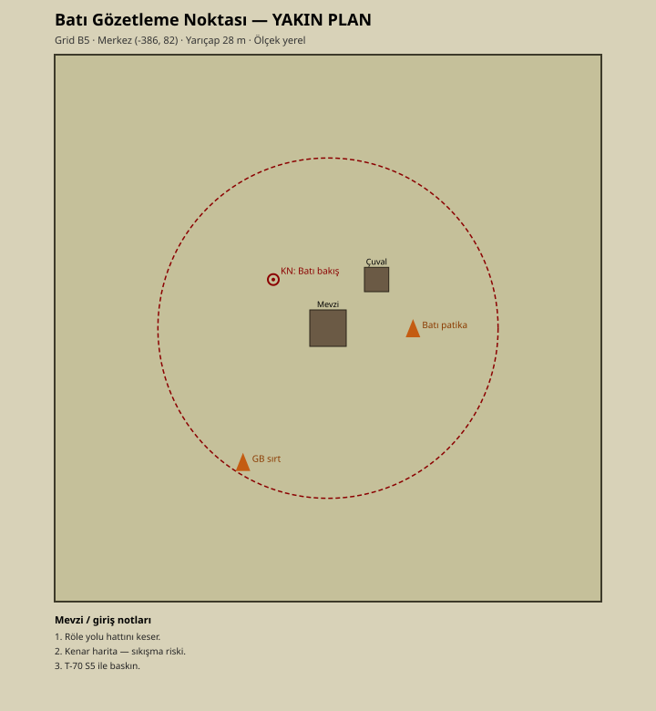

Batı Gözetleme Noktası

Batı Gözetleme Noktası
| Alan | Değer |
|---|---|
| Grid | B5 |
| Tür | Outpost |
| Ganimet | High |
| Merkez (x, z) | -386, 82 |
| Radius / Flatten | 28 m / 17 m |
| Major | Hayır (gözetleme) |
| Yakın plan | ../YakinPlanlar/bati-gozetleme-yakin-plan.svg |

Özet
Batı kenar; röle yolu hattını keser.
Arazi ve yapılar
Kenar harita mevzi.
Saldırı
S5 T-70 veya batı patika.
Savunma
Kaçış dar; uzun tutma önerilmez.
Keskin nişancı / baskın noktaları
Batı bakış.
Ganimet notu
High.
Yol ve bağlantılar
Batı Patika ← Röle Yolu.
İntikal sektörü
S5.
Telsiz çağrı örneği
“B5 Batı Gözetleme Noktası — tim hazır.”